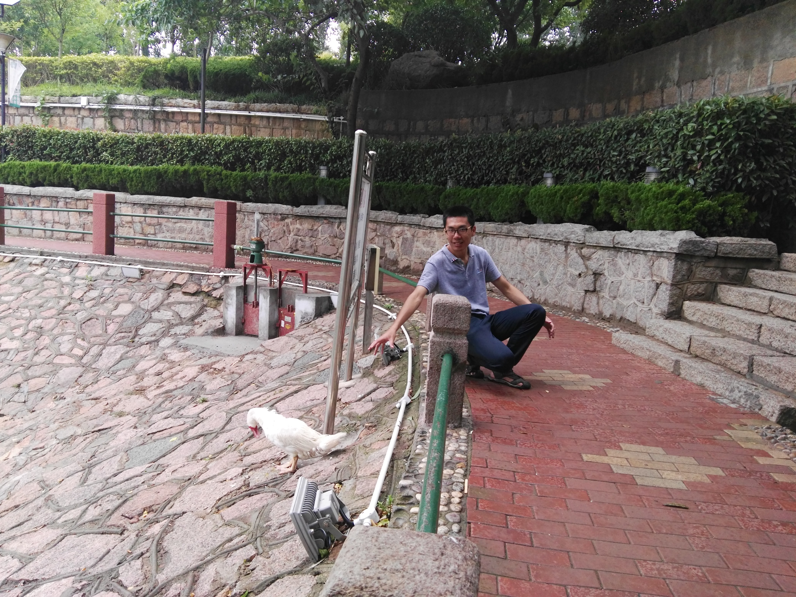

Story of pics
2020/8/22
Today I and Yang Bai talked about the pictures of life, it is hard to say both of us did not have a good picture to share with others. This is not an unimportant topic to collect personal photos in the past few years. Below is some of them:
2020-07-21-tbsi-workshop
2019-12-08-google-devfest

2018-02-03-gansu-wuwei
2018-01-hainan-wenchang
2017-07-09-qingdao
